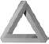

“Otobüs garındaki adamlarını çek ve tren garına yolla.”
“Başka?” diye sordu Grimes.
“Ayrıca hedefin şehirde tanıdığı herkesin bir listesini getir. Onları ele geçirinceye kadar tüm iletişimlerini takip et.”
“Sizce o kadar aptalca hareket edebilir mi?”
“Eğer Vaner çete başı olsaydı hayır, ama bundan emin olamayız. Siviller kaçtıklarında güvenebilecekleri bir yere giderler. Güvenebilecekleri birine. Onu yakalamanın tek yolu arkadaşlarını izlemek olacak. Ya da ailesini.”
“Şimdi,” dedi Crowe, Forsythe’ye dönerek, “Bana ikizini anlatın.”
Caine, Nava’ya Penn Garı’ndan nereye gideceklerini sormak üzereyken bunların bir rüya olduğunu hatırladı. Bir an için unutmuş, bu rüyayı gerçekmiş gibi yaşamaya başlamıştı. Rüyadayken nereye gittiğinin bir önemi var mıydı? Olmadığını düşünse de kafasının içindeki bir ses aksini iddia ediyordu. Ama nereye gidecekti ki? Bu soruyu sorar sormaz cevabını hemen buldu. Ne yapması gerektiği çok açıktı. Yine kardeşinin sözlerini hatırladı.
Kendine somut bir şeyler bul. Güvenli olabileceğin bir yer ya da yanlarında güvende olabileceğin insanlar...
Philadelphia’ya, Jasper’in yanına gitmeliydi. Ona yardımcı olabilecek tek kişiye yani. Belki, o bir çıkış yolu bulurdu bu hayal dünyasından. Bunun yapılacak en akıllıca şey olduğuna karar veren Caine muşamba kaplı koltuğa gömülüp şehri camdan seyretmeye daldı. Radyodaki DJ saatin 09:47 olduğunu söyledi, sonra da ‘İnsanlar Gariptir’ diye bir şarkı çaldı.
Şarkı bitince Nava, Caine’ye emirler vermeye başladı. “Tren garına girdiğimizde başını sakın kaldırma. Tavanda kameralar var. Hareket etmeden durduğunda da şunu okuyormuş gibi yap.” Taksinin koltuğundan kaptığı ıslak bir gazete uzattı. “Anladın mı?”
Caine başını salladı.
“İlk sen gir gara. Ben hemen arkanda olacağım. Eğer olay çıkarsa kaç. Beni bekleme. Ben kendi başımın çaresine bakabilirim. Önemli olan senin ortadan kaybolman.”
Nava, Caine’nin cebine bir cep telefonu sıkıştırdı. “Eğer ayrılmak zorunda kalırsak hızlı aramadaki son numaraya bir ekle ve ara. Benim dışımda herhangi biri cevap verirse, bil ki öldüm. Telefonu at ve kaç. Anladın mı?”
“Kesinlikle.”
34. Sokakla 8. Cadde’nin kesiştiği yerde taksiden inip yürüyen merdivenlerle gara indiler. Yer altına indiklerinde Caine Amtrak trenlerine doğru ilerledi. Bu yolu yüz defa gidip gelmişti ve yere bakarken bile önünden geçtiği dükkânların isimlerini sayabilirdi. Nava’nın yakında olduğunu da hissedebiliyordu. Garın ortasındaki dev panonun önünde durduğunda, başını kaldırıp bakmak istedi.
Nava onun ensesinde, “Bir sonraki tren sekiz dakika sonra. Washington’a gidiyor. Ona bineceğiz,” diye soludu.
Mükemmel. Philadelphia yol üstündeydi. Trene bindiklerinde Caine, Nava’yı Philadelphia’ya gitmeye ikna edebilecekti. Eğer edemezse de onu ekerdi. İnsan bir yanılsamayı ekebilir miydi acaba? Birkaç dakika sonra 183 numaralı trenin 10:07’de Washington’a doğru hareket etmek için 12. peronda hazır olduğu anons edildi.
Nava, Caine’nin dirseğine yapıştı, kalabalığın gittiği yöne doğru ilerlerlerken onu çekiştirdi. Bir şelalenin akıntısına kapılmış gibi alttaki perona gidiyorlardı.
Ajan Sean Murphy’ye hep en boktan görevler düşerdi. Bazen sanki alnında ‘en önemsiz işlere yollayın’ yazıyor sanısına kapılırdı. 12. peronda öylece dikilip şimdiye kadar çoktan Meksika’ya varmış olan birilerinin çıkagelmesini beklemek zorunda kaldığına inanamıyordu. Elindeki bilgisayar çıktılarına baktı. David Caine’nin ve Nava Vaner’in yirmişer resmi vardı. İkisi de olası birçok kılıkta görüntülenmişti.
Caine’nin bir resimde sakalı vardı ama bıyığı yoktu mesela. Bıyıklı ama sakalsız bir Caine vardı. Gözlüklü bir Vaner. Gözlüklü Caine. Kısa saçlı Vaner. Uzun saçlı Vaner. Saçsız Caine. Aptalcaydı bu fotoğraflar, çünkü en önemli olan özellikler boy ve kiloydu. Boylarını değiştiremezlerdi, kilo da zor kamufle edilen bir şeydi. Çoğu şüpheli hep yüzünü gizlemeye çalışsa da, bu da zaman kaybıydı çünkü gözleri onları hep ele verirdi.
Kaçan insanlar Murphy’ye çocukken aldığı tavşanı hatırlatırdı. Bugs’ın kafesini her temizlemek istediğinde, hayvancağız bir köşeye sıkışıp kalırdı ve gözlerini Murphy’nin midesini ağzına getirecek şekilde korkuyla döndürürdü. O salak tavşandan nefret ederdi. Annesi sorumluluk öğrensin diye almıştı o tavşanı, ama Murphy sorumluluk yerine tavşanlardan nefret ettiğini öğrenmişti.
Murphy önünden geçen insan seline bakarken yüzlerine odaklandı. Sabah yediden beri binlerce yolcu görmüştü. Saat daha erkendi, insanların yüzde ellisi sanki hâlâ ayakta uyuyordu. Geri kalan yüzde kırkı da sinirliydi; New Yorklular kendilerini dünyanın efendisi, geri kalan insanları da salak sanırlar. Sanki sadece yüzde onu mutluydu ve yolculuklarını iple çekiyorlardı. Dünyanın başka bir yerinde bu oran, yolcuların yüzde onu değil de yüzde altmışı olurdu. Ama burası New York’tu; özgürlükler ülkesi ve kızgın olanların yuvası.
Önünden başkaları geçti. Sıkılmış, kızgın, gözleri uykulu, kızgın, kızgın, sıkılmış, sinirli, gözleri uykulu, yorgun, kan çanağı gibi gözler... İnsanlar akıyordu sürekli önünden. Arada bir elindeki resimlere, sonra yine yüzlere bakıyordu.
“Gelişme var mı Murphy?” diye bir ses duyduğunda, birden irkilerek kendine gelip yorgunluğunu unuttu.
Başını eğip yakasına iliştirilmiş mikrofona konuşurken bunu gizlemeye bile çalışmadı. İlk günlerde, her görevde doğruluk, adalet ve Amerikan hayat tarzı için bir savaş verdiğini sanarak, her şeyi kitabına göre yapmıştı. Ama on yedi yıl boyunca trenlerde, otobüs garlarında, havaalanlarında, tuvaletlerde (bu gerçekten de iğrençti), barlarda ve otellerde gözetleme yaptıktan sonra bunu artık umursamıyordu. Eğitimde öğretilen birçok şeyi umursamıyordu artık.
“Yok. Ya sende?”
“Yok.”
Murphy ağzını açıp esnedi. Gözler, gözler, gözler. Bu, zaman kaybından başka bir şey değildi. David Caine buraya gelmeyecekti. Saatine baktı. Bir saat sonra biraz ara verebilecekti. Cebindeki sigara paketini yokladı, insanların gözlerine bakarken, yakacağı ilk sigarayı düşünüyordu.

Nava hemen adamı saptadı. Tüm kuralları çiğniyordu ve kalabalığa karışmaya çalışmıyordu. İri yarı, iki metreye yakın uzun boylu bir adamdı. Yüz kilodan ağır gibi görünen adamın ağarmaya başlayan saçları kısacık kesilmişti. Omuz askısındaki tabancayı gizlemek için de mavi bir ceket giymişti. Elinde Caine’nin eşkâli bile vardı.
Ajan daha onları görmemişti, çünkü perona çıkan yolculara bakıyordu. Bu da hataydı. Ajanla aralarında on iki kişi kalmıştı. Nava, Caine’nin trene binme fikrini kabul ettiği için kendine küfretti. Bir turistin arabasını çalıp, herifi bagaja kapatıp, arabayı Conneticut’a sürüp, orada bir plan yapmalıydı.
On kişi kaldı.
İleri doğru eğilip, Caine’nin kulağına fısıldadı, “Kenara çekil ve beni takip et.” Caine dönemeden onu yana itip sokuldu.
Dört kişi kalmıştı.
Ajan, onların yer değiştirdiğini görmemişti. Zavallı salak. Nava, adamın beceriksizliğine şükredeceği yerde, buna kızmıştı. Amerikalılar çok ajan yetiştirir, ama bunu gereğince yapamazlardı.
İki kişi.
Nava, kendinden emin bakışlarla gülümseyerek, yoluna devam etti. Eğer Caine’yi arıyorlarsa bu plan işe yarayacaktı, ama eğer onu arıyorlarsa ve ajan olması gerektiği kadar hızlıysa hapı yutmuşlardı.
Bir kişi vardı önlerinde.
Nava sırtını dikleştirerek, ajana seksi bir bakış attı. Eğer KGB ajanı olsaydı arkasındaki gözlüklü adam bakardı, ama adam KGB’den değildi. Bir an için ajan olduğunu bile unuttu, sadece tahrik olmuş bir erkekti. Gözlerini kadının vücuduna dikti, göğüslerinde durdu, ama yüzüne bakınca bir an için duraksadı.
Nava’nın adam tepki göstermeden harekete geçmesi gerekiyordu. Tökezlemiş gibi yapıp hareketlenmek üzere olan adamın üstüne atladı ve elini hızla göğsüne götürerek yakasındaki mikrofonu söktü.
“Sen...” diyen adam kasıklarında bir şey hissedince birden sustu.
“Hareket etme,” diye fısıldadı gülümseyerek Nava. “Kasığına dayanmış bir bıçak var. Hadım edilmek istemiyorsan bana sarılıyormuş gibi yap ve iki adım geriye gidip duvara yaslan. Çok yavaş hareket et.”
Ajan kendisine söyleneni yaptı. İnsanlar bu iki muhabbet kuşunun yanından geçerken adamın kasığındaki bıçağı fark etmediler.
“Kaç kişisiniz?”
“Vaner...”
Nava bıçağı biraz oynatarak adamın kasığını çizdi. “Kaç kişisiniz?”
“Tamam,” dedi adam geri çekilmeye çalışarak. Sırtı duvara yaslandığı için sıkışmıştı. “Garda on iki ajan daha var.”
“Peronda?” Nava, sanki adamı öpecekmiş gibi başını kaldırdı. Adamın nefesi sigara kokuyordu.
“Bir kişi daha var.”
“Tarif et.”
Adam bir an için tereddüt edince, ona neler kaybedebileceğini hatırlatmak zorunda kaldı Nava.
“Tamam dedik ya!” diye gürledi. “Anlatıyoruz işte. Dikkat et elindekine. Bir doksan boylarında, zayıf. Sarı saçlı, benim gibi.”
“Kimin için çalışıyorsun?”
“CIA,” diye yalan söyledi.
“Tamam.” Nava, Caine’yle konuşabilmek için, başını yana çevirip adamın göğsüne dayadı. “Alttaki fermuarlı kısımdan mavi kalemi çıkarıp bana ver.” Caine sırt çantasını karıştırırken Nava da başını kaldırıp ajana baktı. “Hey, bana baksana.”
Ajan istemeyerek ona baktığında, korktuğu gözlerinden anlaşılıyordu.
“Merak etme seni öldürmeyeceğim.”
Caine kısa plastik tüpü Nava’nın sol eline verdi. Nava bunu ajanın baldırına saplayınca mavi silindir kırıştı ve iğneyi çıkaran mekanizma çalıştı. İğne derisini delerken adam bir an için gerildiyse de, beş saniye içinde benzodiazepin kanına karışınca gevşedi. Yüzünde bir gülümseme vardı. Boş tüpü yere atan Nava adam düşmesin diye sol elini onun göğsüne koydu.
“Adın ne?”
“Sean Murphy,” derken sanki rüya alemindeydi adam.
“Nasıl hissediyorsun kendini, Sean?”
“Uykulu.” Sanki söylediğini vurgular gibi başını duvara yaslayıp gözlerini kapadı.
“Sean!” Nava, bıçağı yerine koyup Murphy’yi sarstı.
Gözlerini açıp neler olduğunu anlayamadan şaşkın şaşkın baktı adam. “Uyumak istiyorum.”
“Biliyorum, ama bana bir iyilik yapman gerekecek.”
“Tamam,” dedi başını eğerek. Dünyanın en kocaman bebeğiymiş gibi davranıyordu.
“Eğer seni uyandıran olursa onlara tren gittikten sonra yorgun düşüp uyuduğunu söyle. Beni görmedin, tamam mı? Uyuyakaldın.”
“Tamam... Seni görmedim.” Uyanık kalmaya çalışıyormuş gibi gözlerini kırpıştırdı. “Uyusam şimdi?”
“Bir sorum daha var. Kimin için çalışıyorsun?”
Gözleri yavaşça kapanırken bir şeyler mırıldandı. Nava sinirlenerek adamın omuzlarını daha sıkı kavradı. On saniye içinde zaten uyuyakalacaktı. “Kimin adamısın?”
Nava başını Murphy’nin ağzına yaklaştırdı, ama adamın sesi bir fısıltıdan ibaretti. “F...B.....IIIIII”. Başı göğsüne düştü ve dudaklarından tükürükler döküldü. Nava, ağzını kapadığı adamı ayakta tutmak için onu duvara yasladı.
“Washington’a giden 183 sayılı trene binecek yolcuların dikkatine. Tren 12. perona girmiştir.”
Nava sırt çantasını omzundan indirdi ve bir plastik tüp daha çıkardı. Bu az önce kullandığıyla aynıydı, ama sarıydı. Perona giren trenin çanını duyabiliyordu. Bakan olup olmadığını anlamak için başını kaldırıp çevreye göz attı, herkes peronda yer kapmak için koşuşturuyordu. Caine dehşetle bakıyordu kadına.
“O ... Yani sen onu...”
“Ölmedi. Eğer onu öldürseydim gittiğimizi bilirlerdi.” Murphy’nin kulağından minik kulaklığı alıp kendi kulağına taktı. Sonra da yaka mikrofonunu yerine taktı.
Tam o anda bir ses duyuldu. “Murphy cevap ver.”
“Evet,” dedi Nava mikrofona doğru eğilip sesini değiştirerek.
“Bir şey gördün mü?”
“Yok.”
“Ben de görmedim. Bence haklısın, zaman kaybediyoruz burada.”
“Ya.” Nava kısa cevaplar verirse yakayı ele vermeyeceğinin farkındaydı.
“Tamam, beş dakikaya yine ararım.”
“Tamam.” Nava beş saniye daha bekledi, sonra da kulaklığı yine ajana taktı. Ses düğmesini de iyice açtı.
“Washington’a giden 183 sayılı seferle seyahat edecek yolcuların trene binmeleri rica olunur. Tren iki dakika içinde 12. perondan kalkacaktır.”
Nava, Murphy’nin baldırına bir iğne daha sapladı. Amfetaminlerle karışık flumazelin, ilk ilacın etkisini tersine çevirecekti. Sonra dönüp Caine’nin koluna yapıştı ve insanların arasına çekti onu. Bir dakika sonra gardan çıkan trene binmişlerdi.
Tren hızlanınca Nava derin bir nefes verdi, şehir dışına çıkıyorlardı. Gerçekten kurtulup kurtulmadıklarını merak etti, ama merakının uzun sürmeyeceğini biliyordu. Nasılsa yakında öğrenirlerdi.

“Biletler!” dedi şişman kadın koridorda yürürken. “Lütfen biletlerinizi çıkarın. Biletler!”
Nava, Caine’nin eline birkaç yirmilik sıkıştırdı. “Washington’a tek gidişlik bilet al.”
Bilet satan kadın yanına geldiğinde Nava’nın dediğini yaptı. Nava, Baltimore’a gidiş-dönüş bilet alınca da tepki vermedi. “Eğer soran olursa birlikte seyahat ettiğimizi düşünmesini istemedim. Belki biraz zaman kazandırır bu bize.”
“O zaman ikimiz de Baltimore’ye mi gidiyoruz?” diye sordu Caine.
Nava başını salladı. “Hayır. Bir sonraki durakta iniyoruz.”
“Neden Newark’ta iniyoruz?”
“UGA izimizi sürmeden önce bu trenden inmemiz gerek de ondan.”
“Benim söz hakkım var mı?”
“Hayır. Bu yapabileceğimiz en akıllıca şey.”
Caine derin bir nefes aldı. Bu yanılsamayı kontrol altına almalıydı. Jasper’e ulaşırsa güvende olacaktı. “Ben Philadelphia’ya gitmek istiyorum.”
“Neden?”
“Kardeşim orada oturuyor.” Caine ağzını açar açmaz bunu bir gerekçe olarak öne sürerek hata ettiğinin farkına vardı.
“Oraya gitmememiz için en büyük neden de bu. Bizi arayacakları ilk yer orası.”
“Kim arayacak bizi?”
“FBI ve UGA’nın seni yakalamak için devreye soktuğu daha başka kim varsa onlar,” dedi fısıldayarak Nava. “Sen farkında değil misin olanların?”
“Ama Jasper’e ulaşmam gerek.”
“Şimdi ona gidemezsin. Bunu nasıl olur da anlamazsın?”
“Hiçbir şey mantıklı değil!” diye patladı Caine. Birkaç yolcu dönüp ona baktı.
“Bağırma,” dedi Nava dişlerini sıkarak. Çevrelerindeki herkes onları dinlemek için kulak kabarttı. Geriye yaslanıp Caine’nin kulağına fısıldadı. “Burası çok kalabalık, şimdi olmaz.”
“Peki,” diye fısıldadı Caine. “Ama ben Philadelphia’ya gidiyorum.”
“Gitmiyorsun. Bana ihtiyacın var David. Jasper’e gidersen hapı yutarsın. Lütfen bana güven.”
Caine buna karşı çıkmak için ağzını açtıysa da onunla konuşmanın bir faydası olmayacağını biliyordu. Gözlerini kapayıp ne yapması gerektiğini kestirmeye çalıştı. Philadelphia’ya gitmenin doğru olduğunu biliyordu, ama Nava’nın da onunla gelmesi gerekiyordu. Eğer tüm bunlar gerçekse ve o gerçekten Laplace’nin Şeytanı’ysa, o zaman Philadelphia’ya gidip gidemeyeceğini de bilmesi gerekiyordu. Ya da her şeyi nasıl istediği gibi yönlendireceğini bulması gerekiyordu. Ama aklına gelen tek şey tuvalete saklanmaktı.
Kendine güldü. Bu, her şeyi bilen bir varlığın yapacağı türden bir plan değildi. Düşünüp ne yapacağını kestirmeye çalıştı. Ama bir tek kendini tuvalette bir numara çevirirken görüyordu.
Birden, gözlerini açarak derin bir nefes aldı. Nava ona doğru döndüğünde endişeliydi.
“David iyi misin?”
Sesi sanki çok ama çok uzaklardan geliyordu. Saat 10:13:43’tü. Bu işi yapabilirdi. Otuz sekiz saniye içinde iş adamına ulaşmalıydı. Hemen ayağa kalktı.
“Nereye..?”
“Tuvalete,” dedi, Nava daha soruyu tamamlayamadan.
Nava ona şüpheli gözlerle baktı, sonra da kalkıp dirseğine yapıştı. “Sana yardım edeyim.”
“Tamam,” dedi Caine bir yandan saniyelerin hesabını tutarak. Hâlâ vakti vardı. Zor yürüyormuş gibi dikkatle adım atınca, aynen tahmin ettiği gibi, Nava bunu garipsemedi. Rüyadaymış gibi ilerledi Caine. Sanki milyonlarca defa içinden geçtiği bir labirentten geçiyormuş gibi hissetti kendini.
Vagonun sonundaki kapı açıldı ve otuz küsur iş adamı tam o anda içeri girdi. Bir adamın iki elinde de birer yemek tepsisi vardı. Caine tepsilerde ne olduğunu göremiyordu ama biliyordu: İçi kola dolu bir plastik bardak, bir paket doritos cips ve ton balıklı bir sandviç. Adam geliyordu. Caine durdu ve dengesini kaybeder gibi yaptı. Nava düşeceğini sanarak koluna yapıştığında aslında dengede duruyordu. Caine teşekkür edip bir adım daha attı.
Şimdi adamla neredeyse göğüs göğüseydiler. Caine adamın geçmesi için yan dönerken tren sola kıvrıldı. İleri devrilip adama çarpınca da kola döküldü.
“Dikkat etsene!” diyerek bağırarak Caine’yi üstünden itti.
“Pardon, suç bende,” dedi Caine tuvalete doğru giderken. Nava da yanındaydı. Tuvaletin kapısını kapadığında iş adamından yürüttüğü cep telefonunu eline aldı. Gözlerini kapayıp dört gün önce duyduğu numarayı hatırlamaya çalıştı.
Hatırlayınca da çevirdi.

Jennifer Donnelly, elini Ford marka arabasının direksiyonundan ayırmadan, çantasındaki telefonunu bulmaya çalıştı. Cep telefonu da en olmadık zamanlarda çalardı zaten. Önüne çıkan Mini Cooper’i görünce şaşırıp frene asıldı. Bir saniye sonra da gümüşi bir Lincoln ona arkadan çarptı. Jennifer’in aracı köşeye sürüklenip kaldırıma çarpınca durdu.
Jennifer’in sırtı koltuğuna çarptığında hava yastığı o kadar çabuk şişmeye başladı ki, sanki yumruk yemiş gibi oldu. Bir an için öylece kalakaldıysa da, bacaklarının arasından akan sıcak sıvı onu kendine getirdi.
“Hayır. Tanrım olamaz!” diyerek, olanları durdurabilecekmiş gibi bacaklarını sıkıca kapadı. Ama artık çok geçti.

Sifon sesi duyuldu ve Caine tuvaletten çıktı. “Yerimize oturalım,” dedi Nava’ya.
Nava, onun bir şeyler çevirdiğini anladı, ama neler döndüğünü bilemediği için onu takip ederek yerine oturdu. Beş dakikaya kalmaz Newark’ta olurlardı. Trenden inmeye sabırsızlanıyordu. UGA’nın yerlerini saptadığından şüpheleniyordu. Eğer ajan başına gelenleri hatırlarsa, o zaman şu anda bir tuzağa düşmek üzerelerdi.
Nava vagona bakarak kaçışı planlamaya çalıştı. Eğer onları yakalama görevi kendine verilse ne yapardı? Trenden inmelerini bekleyip de peronda mı enselerdi? Tren durduğunda binip arama mı yapardı? Hayır, treni gara girmeden önce durdurur ve arama yapardı. O zaman durum kontrolü altında olurdu. Kaçmaya çalışsalar bile kaçacak yer olmazdı.
O böyle yapardı. Ama bu operasyonu Nava değil Amerikalılar yönetiyordu. Amerikalılar da rehine alınabilecek bir durum olmamasına, başkalarının zarar görmemesine çok dikkat ederlerdi. Operasyonu başarıyla tamamlamaktan çok, bir sonraki gün manşetlerde ne yazacağıyla ilgilenirlerdi. Yani... Ne olacaktı? O zaman, bir çatışma olabileceği için, treni durdurup binmezlerdi. Onların gardan ayrılmasına izin verip kontrolleri altında tutabilecekleri bir durumda üstlerine atılırlardı.
Bir plan yapmaya başladı.

Bill Donnelly iş tulumunun cebindeki cep telefonu çaldığında trenin önündeki rayları seyrediyordu. Herkesin kıyafetiyle dalga geçtiğini biliyordu, çünkü baştan aşağı kot kumaşa bürünmüştü; kepi, tulumu, gömleği, hepsi kottu. Ama bir tren kondüktörü kot tulum giyerdi ona göre. Telefonu cebinden çıkarırken gözünü raylardan ayırmadı.
“Evet!” dedi. Arayanın derin derin nefes aldığını duyunca telefonu açarken neşeli olan sesi birden değişti. “Hayatım sen misin?”
“Evet, benim,” dedi zar zor konuşan karısı. “Bir kaza oldu.”
“İyi misin? Bebek nasıl?”
“Suyum patladı,” dedi kadın ve derin bir nefes alarak sustu. “Hastaneye gidiyorum.”
“Ama doğuma daha altı hafta var.”
“Bill lütfen, sana ihtiyacım var. Eve vardın mı?”
“Newark’ın dışındayız şu anda, ama merak etme hızlanırım.”
Kadın sancıyla bağırdı. “Bill lütfen. Korkuyorum. Bunu yine tek başıma yapamam, n’olur.” Ağlamaya başladı.
“Tamam tamam,” dedi sakin olmaya çalışarak. “Her şey yoluna girecek bebeğim. Daha sen gözünü açıp kapayıncaya kadar orada olacağım.”
Kadın burnunu çekip gözyaşlarını sildi. “Söz mü?”
“Söz veriyorum. Bebek doğarken elini tutuyor olacağım.”
“Tamam. Şimdi hastaneye gidiyorum. Ambulans geldi. Seni seviyorum.”
“Ben de seni.”
İki yıl önce hastanede ne halde olduklarını hatırladı adam. Geç saatlere kadar çalıştığı için hastaneye zamanında yetişememişti. Zaten ilk saatlerde pek bir şey olmazdı. Kız kardeşinin üç çocuğu olmuştu ve her birinin doğumunda en az yirmi dört saat doğum sancısı çekmişti. Doksan dakikadan bir şey çıkacağını düşünmemişti. Ama yanılmıştı. Karısı hemen doğurmuştu ve bebek -küçük Matthew William- ölü doğmuştu. Bill, Jennifer kendine gelirken orada olamadığı için hep kendini suçlamıştı. Elinde bir kutu puroyla hastaneye geldiğinde de yüzüne tükürmüştü karısı. Normal hayatlarına devam edilebilmek için bir yıl psikologa gitmişlerdi. Üç ay sonra da karısı yine hamile kalmıştı.
Bill bazen karısının ikinci kez hamile kalmasının bir hata olabileceğini düşünürdü. İkinci hamilelikte yaşadıkları stresten dolayı evlilikleri neredeyse yıkılıyordu genç çiftin. Ama bir şekilde bugüne kadar gelmişlerdi. Doğumda karısının yanında olabilmek için ücretsiz izin almayı bile başarmıştı. Ama evdeki hesap çarşıya uymamıştı. Olanlara inanamıyordu. Bu olmamalıydı. Bir kez daha aynı olayları yaşayamazlardı.
Saatine, sonra da güzergahına baktı. Trenton’da bakıma gireceklerdi, bu yirmi dakika kadar alırdı. Ayrıca, yemek vagonuna da mal yüklenecekti, bu da on dakika daha alırdı. Ne yapacaktı? Elinden hiçbir şey gelmezdi. Sonra gözünün önüne odada yalnız başına kalan karısı Jenny geldi. Matthew’i kaybettikleri hastanedeydi.
Bill iç geçirdi. Ne yapması gerektiğini biliyordu. Bunun uğruna işini kaybetmeye razıydı. Dönüp kapısını kilitledikten sonra, vitesi değiştirerek treni hızlandırdı. Mikrofonu kaptı, derin bir nefes alıp düğmeye bastı.
“Yolcuların dikkatine. Newark, Metropark, Princeton ve Trenton duraklarında durmayacağımızı duyurmak istiyoruz.”
Birkaç yolcu ne olduğunu anlamayarak homurdandı.
“Amtrak şirketi adına özür dileriz. Bir sonraki durak Philadelphia 30. Sokak garı.”
Nava’nın çevresindekiler bunu duydukları anda itiraz etmeye başladılar. Ama onları dinlemiyordu. Yarın zehir zemberek bir mektup yazmaktan başka bir şey yapamayacaklarını biliyordu. Bunu bile yapacakları şüpheliydi. O Caine’ye odaklandı. Adam camdan dışarı bakıyordu.
“Ne yaptın?” diye sordu.
Caine dönüp kadının gözlerinin içine baktı. “Anlamadım?”
“Boş versene sen,” dedi Nava sinirlenerek. “Bunu sen yaptın, değil mi?”
“Paranoyaksın,” dedi Caine.
“Yalan söylüyorsun,” dedi Nava.
Caine cevap vermeyerek cama döndü yine. Nava nasıl yaptığını bilmiyordu, ama Caine yapmıştı bunu. Tversky’nin Laplace’nin Şeytanı ile ilgili teorilerini ilk okuduğunda inanmamıştı. Gerçekten inanmadığı için, Julia’yı Korelilere teslim etmekten çekinmemişti.
Nava, Kuzey Korelileri ve başına ödül koyduklarını düşününce titremeye başladı. Kendi çaresizliğini düşünmemeye çalışarak yanındaki adama baktı. Nava bazı para-normal becerileri olabileceğini düşünmüştü, ama yine de... Geleceği tahmin etmekle, kontrol etmek arasında çok büyük bir fark vardı.
Tren Philadelphia’ya varıncaya kadar durmayacaktı. Bu nasıl olmuştu? Kondüktör nasıl olmuş da dört durak birden atlamıştı? Olanları inkar etmek istercesine başını salladı, çünkü bu mantıklı değildi. Tversky, Caine’nin bilinçli olarak becerilerini kontrol edemediğini yazmıştı, ama olanlara bakılırsa Nava bundan pek de emin değildi. İçgüdülerine güvenirdi ve içgüdüleri sanki bağıra bağıra ona tamamen farklı bir hikaye anlatıyordu.
Yine Caine’ye baktığında Nava artık düşünceli değildi, dehşete düşmüştü.

Grimes, Fritz ve Murphy’yi konuşturdu Crowe duyabilsin diye. Fritz konuştu daha çok, ama Murphy de birkaç kere araya girdi. Murphy bir duvar dibinde uyuyakaldığı için kendi kıçını kurtarmaya çalışıyordu. Adamların anlatacakları bitince de Grimes, Crowe’ye döndü.
“Sizce?”
“Bence birden uykuya dalması garip. Özellikle de kırk üç yaşına kadar hiçbir hastalığı ya da rahatsızlığı olmayan bir ajanın uyuyakalması çok garip,” dedi sakince Crowe.
“Ne oldu o zaman? Caine ve Vaner o trendeler mi sizce?” Grimes buna bayılıyordu. Gözetleme işi iyiydi, ama ülke çapında, yüzlerce kamerayla adam kovalamak inanılmaz bir şeydi. Grimes, Crowe’nin bu işi çok iyi bildiğinden emindi.
“Trenden ne haber? Bir gariplik var mı?”
“Bakayım,” diyen Grimes bir dakika içinde Amtrak’ın sitesinin giriş kodunu kırdı. Plazma ekranlarından birinde doğu yakası ve sahil boyunca devam eden tren rayları göründü. “Bu ilginç işte.” Grimes mikrofonunun sesini açtı. “Galiba kondüktör çıldırıp treni kaçırmış. Bir an önce Philadelphia’ya varması gerekiyormuş. Bu herifi anında işten atacaklar.”
Crowe birden bu konuyla ilgilenerek öne doğru eğildi. “Amtrak’ın veri tabanından daha önce kaç defa bir kondüktör tren kaçırmış, baksana.”
“Tabii.” Grimes’in bu bilgilere ulaşması birkaç saniyesini aldı. “Tamam, buldum. Bu bilgiyi kaydettikleri on beş yıl içinde on sekiz kere olmuş bu.”
“Olasılığı hesapla.”
Grimes bunun garip bir talep olduğunu düşündüyse de, istenileni yaptı, çünkü Crowe ne yaptığını biliyordu. “Diyelim ki son on beş yıldır aynı hatları çalıştırıyorlar. Günde 100 sefer yaptıklarına göre, o zaman yılda 36.500 sefer eder. On beşle çarpınca da...” Grimes verileri yazdı. “547.000 sefer eder. On sekiz kere tren kaçırıldığına göre de bunun olma olasılığı yüzde 0.003, yani 30.000’de 1.”
Crowe elini yumruk yaptı. “Caine’nin işi bu. O trende.”
“Birlikleri çağırayım mı?”
“Dur,” dedi Crowe elini kaldırıp. “Tren kaç dakika sonra Philadelphia’da olacak?”
“Dur bakayım.” Grimes menülere ve varış saatlerine baktı. “Kırk yedi dakikaları falan var.” Gülümsedi. “Aslında biraz hızlı gidiyorlar.”
“Helikopter var mı?”
“Evet,” dedi Grimes. “Hazır bekliyor çatıda. Pilotu arayayım mı?”
Crowe cevap bile vermeden asansöre doğru koşmaya başlayınca, Grimes pilotu araması gerektiğini düşündü.

Dört dakika sonra şehrin yüzlerce metre üzerinden uçuyordu. Saatte 130 mil hızla gittiklerine göre tren varmadan biraz önce varacaklardı Philadelphia’ya. Hatta, rüzgarın şiddeti artarsa daha erken bile varabilirlerdi. Crowe bir düğmeye bastı.
“Grimes, Philadelphia’daki tüm ajanları o trene yolla. Hepsinin elinde Caine’nin ve Vaner’in resimleri olsun....”
Crowe tüm detaylarıyla planını anlatırken, Grimes dikkatle onu dinledi. David Caine avlanmanın ne demek olduğunu görecekti.

Caine tam olarak ne zaman uyandığını kestiremedi. Trenden gelen seslerle sanki bir döngüdeydi ve sanki bunları daha önce de yaşamıştı. Pamukların arasındaymış gibi hissederken bilincini kazanmaya çalışarak, gözlerini açmadan esnedi.
Sonra birden her şeyi gördü. Tommy’ye olanlar hakkında suçluluk hissediyordu... Tommy ölmemeliydi. Bu Caine’nin suçuydu. Eğer podvaal’dan uzak dursaydı bunların hiçbiri...
Hayır, bu olanların hiçbiri gerçek değildi. Patlama, kadın, o aptalca telefon görüşmesi, hiçbiri gerçek değildi. İlerlemek zorundaydı. Eğer bu rüya alemindeki haliyle Jasper’e ulaşabilirse, o zaman her şey yoluna girecekti. Nava’ya baktı. Başka bir hayatı yaşıyor olsaydı, böyle muhteşem bir kadınla kaçmak en büyük hayali bile olabilirdi. Ama bu hayatta -bu rüyada- günlük sorunlardan kaçmıyorlardı, katillerden kaçıyorlardı.
“Yolcuların dikkatine. Beş dakika içinde Philadelphia garına varacağız. Bu değişlikten dolayı yine özür dileriz. Anlayışınız için teşekkür ederiz.”
Caine bir an için sanki bunları daha önce yaşamış gibi hissetti kendini. Restoran vagonuna gitmesi gerektiğini anladı. Fazla zamanı yoktu.

Nava, Caine’nin aklını kaçırdığını düşünmeye başladı. Bir anda derin bir uykudan uyanıp, onu sürükleyerek yemekli vagona götürüyordu ve acele etmeleri gerektiğini söylüyordu. Oraya vardıklarında da on paket cips aldı. Nava daha bir şey diyemeden vagonunun sonuna doğru ilerlerken bunları dişleriyle açmaya başladı.
Vagonları ayıran sürgülü kapıyı çekip açan Caine, bu vagonla diğerini ayıran metal platformda durduğunda yerdeki küçük deliklerden rayları görebiliyordu. Caine orada durup cipsleri boşluklardan boşaltmaya başladı, son torbayı da boşalttıktan sonra onu da diğerleri gibi yere attı.
“Çıldırdın mı?” diye sordu Nava.
“Evet Nava,” dedi Caine. “Galiba delirdim.”
“Niye böyle bir şey yaptın ki?”
“Emin değilim,” dedi Caine kekeleyerek, sanki çok uzaklara bakıyor gibiydi.
Nava bir anda buz kesti. “Trende olduğumuzu biliyorlar mı?”
“Evet, biliyorlar herhalde.”
Bu normal bir operasyon olsaydı yedek planlarını düşünürdü, ama bugün riskli birçok işe kalkışmıştı. Caine’yi kullanabilirdi. Bir şekilde treni Philadelphia’ya getirmeyi başarmıştı, değil mi? Ama adamı, bu... Bu yeteneklerini… Onları kullanmak konusunda zorlarsa, bunun kötü sonuçları olabileceğini düşündü. Bir tuzağa düşebileceklerini düşününce, bu riski göze almaya karar verdi. Dönüp Caine’nin zümrüt yeşili gözlerinin içine baktı.
“Caine, trenden kazasız belasız kaçtığımızı görmeye çalışmanı istiyorum.”
“Nava, sanırım böyle olmuyor.”
“Ama emin değilsin, değil mi? Haydi dene. En iyi sporcular koşmadan önce bunu gözlerinde canlandırırlar. Askerler çarpışmaya girmeden bunu gözlerinde canlandırırlar. Lütfen David, dene. Bir yerde bana güvenmeye başlaman gerek.”
Caine sanki Nava’ya karşı çıkmak istiyormuş gibi baktı, ama sonra başını salladı. “Haklısın.” Anons duyulmadan gözlerini kapadı.
“Yolcuların dikkatine. Philadelphia Garı’na giriyoruz. Burada inecek yolculara Amtrak’ı seçtikleri için teşekkür ederiz. Bu güzel şehirde hoş vakit geçirmenizi dileriz.”

Dev metal canavar uzaklaşırken, siyah gri bir güvercin karanlık gökyüzünden yere yaklaştı. Yerde duran cipsleri gagalamaya başladı. Sürünün geri kalanı gelmeden karnını doyurması gerekiyordu. Birden bir ses duydu ve tüylü beş hayvanın ona doğru geldiğini gördü. Hiç tereddüt etmeden havalandı.
Başının üstündeki dev metal kuşu gördüğünde artık iş işten geçmişti.

Zaman daralıyordu. Crowe, FBI ekibinin kulaklıktan gelen konuşmalarını dinledi. Forsythe’nin bu kadar çabuk nasıl yardım bulduğunu bilemiyordu. Ayrıca, FBI’yı UGA adına nasıl çalıştırıyordu ki? UGA’nın adamı olduğu için kendisi timin başındaydı. Kumanda ondaydı yani. Bürodakiler Crowe’nin bu işin başında olduğunu öğrendikleri anda birileri işinden olacaktı herhalde, ama bunu düşünecek vakti yoktu. Tren doksan saniye sonra gara girecekti. O da, zamanında orada olup ekibi yönetecekti.
Helikopter inerken yağmur yağmaya başlayınca midesi ağzına geldi. Emniyet kemerine yapışıp koltuğuna yaslandı. Birden helikopter sanki olduğu yerde durdu, sonra da sola doğru çekerek yine yükselmeye başladı.
“Ne oldu?” diye sordu Crowe helikopterin pervanelerinden gelen sesi bastırmak için bağırarak. Pilot cevap vermedi, çünkü helikopteri kontrol etmeye, rotasını düzeltmeye çalışıyordu.
“Galiba pervanelere bir kuş çarptı!” Birkaç düğmeye basınca helikopter yine alçalmaya başladıysa da bu sefer daha yavaş gidiyordu. “Kontrol etmekte zorluk çekiyorum efendim! Park yerine inmek zorundayım!” Helikopter yine titrer gibi oldu ve pilot müdahale edene kadar sanki bir hava boşluğuna düştü.
“Güvenli bir şekilde yere indir,” dedi Crowe helikopter ileri geri sendelerken. Mikrofona doğru bağırdı. “Bu daha önce oldu mu hiç?”
“Hiç olmadı efendim!” dedi pilot helikopter yere yaklaşırken.
Crowe tesadüflere inanmazdı. Nasıl olduğunu bilmiyordu ama, bunu David Caine yapmıştı. Crowe, hayatında ilk defa, avcı değil de av olabileceğini düşündü.

Jasper’e ulaşmak istiyorsa Nava’ya ihtiyacı vardı Caine’nin, bu yüzden de ona güvenmek zorundaydı. Gözlerini kapayıp nasıl kaçabileceklerini görmeye çalıştı. Nava ile peşlerindekileri geride bırakmalı, yok olmalılardı. Bunu görmeye çalıştı. Bir sahneyi görüp duruyordu sürekli.
Televizyonda beyzbol maçı seyrediyormuş gibi hissetti kendini. Elinde birasıyla televizyona bakardı ve içten içe oyuncunun o atışı yapabilmesini dilerdi; dilemekten de öte isterdi. Oyuncunun ısınmasını seyrederken onun için tezahürat ederdi; sanki, yeterince isterse, yeterince kendini sıkarsa, bir şeyi değiştirebilecekmiş gibi hissederdi.
Tren tünele girince Caine birden çevresinde olup bitene dikkat kesildi; frenlerin sesi, raylardaki tekerlerin sesi, gara girerken trenin yanıp sönen ışıkları. Bunların olduğunu hissetti. O anı yaşıyordu, hayatında şimdiye kadar yaşamadığı kadar derin bir şekilde yaşıyordu o anı.
Ama sanki bir yandan da kendini dışarıdan seyrediyormuş gibiydi. Bir arabadaydı. Evet, büyük, siyah bir arabada uzaklaşıyordu. Nava direksiyondaydı. Aralarında tanıdık biri de vardı. OAn’ı geçmiş olarak görüyordu. Caine gelecekteki kendisinin aklını okumaya çalıştı, hafızasına ulaşıp nasıl yaptığını sormak istediyse de bir cevap alamadı.
Bunları düşünmemeye çalışıp Şimdi’ye döndü. Çabaladı, diledi, istediklerini gerçekleştirmek için uğraştı. Bunun mümkün olduğunu biliyordu, şimdi bunu olası yapmalıydı. Ama ne yapması gerektiğini bilemiyordu. Düşünmek zorundaydı, odaklanacaktı, dileyecekti.
“David! David!” Nava parmaklarını onun gözlerinin önünde şaklattı. Caine hızlıca gözlerini kırpıştırarak şimdiki zamana döndü. Zihnindeki, yeni bir geleceğe uzanan görüntü yok oldu. Bir an için her şey apaçık oradaydı, sonra da çok uzaktı. Sanki bir rüyadan uyanmış gibiydi. Birkaç saniye içinde, gördüklerini hatırlamıyordu artık.
“İyi misin?” diye sordu parmaklarıyla Caine’nin koluna yapışan Nava. Galiba bunu birkaç kere sormuştu ona.
“Evet... Ne oldu? Bayıldım mı?”
Caine başka sorular da sormak istiyordu, ama o sırada kapılar açıldı.
Nava ona doğru eğilip fısıldayarak konuştu. “Bizi, kontrol altında tutabilecekleri bir yerde ele geçirmek isteyeceklerdir. O zaman başkalarına bir zarar gelme olasılığı azalır çünkü. Eğer bir şeyden şüphelendiğimizi anlamazlarsa peronda güvende oluruz, tamam mı? Trenden indiğimizde etrafına bakınırken tedirgin olduğunu belli etme. Ben ne yaparsam, onu yap. Hazır mısın?”
“Bundan daha hazır olamam zaten.” Caine bu sözleri daha önce de söylemişti ama şimdi anlıyordu ne anlama geldiğini bu deyişin: Buna hazırlıklı değildi, ama başka şansı da yoktu.
Nava onun elini tuttu ve trenden inerken sıktı.
Caine birden Philadelphia’ya gelmenin pek de iyi bir fikir olmadığını düşünmeye başladı.

Helikopter tren garından bir mil kadar ötede bir bankanın park yerine indi. Biraz sert bir iniş yaptılarsa da bu Crowe’nin umrunda değildi. İndiği anda helikopterden çıkıp yağan yağmurun altına attı kendini. Yağmur, adam döver gibi yağıyordu. Anında sırılsıklam olmuştu. En yakındaki araç olan siyah Honda Civic’e doğru koşup, tabancasının kabzasıyla arka camlardan birini kırdı. Vurduğu yerde ağ gibi parçalanan cam, elini uzatınca dağıldı.
Direksiyonun arkasına geçtiğinde saçlarını geriye taradı elleriyle, gözlerini sildi ve direksiyonun altına uzandı. İkinci denemesinde motoru çalıştırıp hızla park yerinden çıkarken, heyecanla elini kolunu sallayan bir gence çarpıyordu az kalsın. Herhalde bu, aracın sahibiydi.
“Durum nedir?” dedi ters bir sesle kulaklığına bağlı olan mikrofona doğru.
“Hedefi saptadık,” dedi ekip lideri.
“Yalnız mı?”
“Hayır, yanında Vaner var.”
Kahretsin. Birlikte olduklarını düşünse de bunu kesinkes bilmek ayrı bir dertti. Gelirken helikopterden, Philadelphia’daki ekibe Vaner hakkında bilgi vermişti. Kadın çok tehlikeliydi. Onu da canlı ele geçirmek isteseler de Caine daha önemliydi. Crowe bir sonraki emrini verdiğinde bunun önemli olmadığına inandırmaya çalıştı kendini. Kadın ne de olsa bir haindi, ama kendi yalanına kendisi de inanmadı.
“Gerekirse,” dedi Crowe, “Vaner’i durdurmak için vurun.”
“Anlaşıldı. Vaner’i indirmeye yeşil ışık yakıldı.”
Crowe, verdiği emri düşünmemeye çalışarak, operasyona odaklandı. “Birinci tim yerinde mi?”
“Olumlu.”
“İkinci tim?”
“İki yerinde efendim.”
Crowe neler olacağını düşünürken bir kırmızı ışıktan geçti. ”Tim bir. Başla!”
“Tim bir başlıyor,” diye tekrarladı tim lideri. Şansları yaver giderse, daha Crowe istasyona varmadan her şey halledilmiş olacaktı. Ama karşılarına aldıkları adam Caine olunca, şanslarının yaver gitmeyeceğini biliyordu.

Bir keskin nişancının onları vurma olasılığı azdı, ama bunun dışında yerin altında olmanın başka bir artısı yoktu. Peronun iki ucunda bulunan merdivenlerin sonundaki kapılar dışında bir çıkış yoktu. Bir de tünelin çıkışına kadar giden tren rayları vardı. Yerin yüz metre kadar altındaydılar. Nava, tünelin dibindeki gün ışığını görebiliyordu. Oradan çıkmayı düşündü, ama bu durumda kendilerini açıkta bırakmış olacaklardı. Diğer seçenek ise yürüyen merdivenlerden çıkmaktı ki bu da en az ilki kadar tehlikeliydi. Eğer yukarıda ajanlar onları bekliyorsa, o zaman kurbanlık koyun gibi düşeceklerdi ellerine.
Nava kalabalık perona baktı. Kimse özellikle onlarla ilgilenmiyormuş gibi görünmüyordu, ama ajanlar iyiyse zaten böyle olması gerekiyordu. Belli kişileri hemen eledi; anneler, çocuklar, yaşlılar. Burada olanların yüzde kırkını eleyebiliyordu sadece ve bu yeterli değildi.
Yine rayları takip edip buradan çıkmayı düşündü. Caine’nin koluna yapışıp raylara atlayarak kaçmak istiyordu, ama bundan nefret etse de yürüyen merdivenlerde kalabalığa karışmanın daha akıllıca olduğunu biliyordu. O zaman onları hedef alanları görmek daha kolay olacaktı.
Omzunun üzerinden baktı ve ikiz kızlarına göz kulak olmaya çalışırken bir yandan da bebek arabasıyla uğraşan bir kadın gördü. Mükemmel bir kalkandı bu aile. Nava onlar yanlarına gelinceye kadar yavaşladı. Caine’nin kolunu sıkınca o da yavaşladı. Yine de başka bir şeyler yakalamak için gözleriyle kalabalığı taradı. Birkaç genç onu süzüyordu, ama daha çok beğeniyor gibi bakıyorlardı, profesyonellere pek benzemiyorlardı. Biraz ilerideki yapılı bir kadın ajana benziyordu ama eli kolu alışveriş torbası doluydu.
Nava tam peşindekilerden kurtulduklarını düşünmeye başlamıştı ki adamı gördü. Eski bir kot ve kazak giymişti. Elbiseler üstüne uymuyordu. Saçı düzgün kesimliydi ve bıyığa da düzgündü. Daha yeni olan ayakkabılarını görünce Nava hata yapmadığını hemen anladı.
Adam sadece göz ucuyla bakıyordu onlara, ama Nava artık kendilerini izlediğini anlayabiliyordu. Caine’ye doğru eğilip bıyıklıya baktı. Adam şimdi de Nava’nın omzunun üzerinden bir yerlere bakıyor gibi yapıyordu. Adamın takım elbiseli genç bir kadına baktığını gördü. Kadın iyiydi. Çok kontrollüydü, birkaç saniye başını kaldırdıktan sonra gazetesini okumaya döndü. Ama Nava kadının koltuğunun altındaki kabartıyı görmüştü o daha gazeteyi kaldırmadan.
“Saat yedi yönünde bıyıklı herif. Saat iki yönünde sarışın, gazete okuyan kadın.”
Caine başını sallayıp önüne bakmaya devam etti. Nava derin bir nefes aldı. Bir tek Caine’yi istediklerini biliyordu, yani Nava’yı her an harcayabilirlerdi. Duraksadı, sonra birden sakinleşti. Paniklemesi için bir neden yoktu; her zamanki gibi ya yaşayacaktı ya ölecekti.
Yavaşladı ve üç çocuklu anneye iyice yanaşarak çocukları Caine ve bıyıklı arasında tutmaya özen gösterdi. Sol tarafı kapanınca sağa yöneldi. İlerlerken kalabalıktan ayrılmadıkları için kadın ajanın kucağına düşeceklerdi. Caine birkaç saniye sonra ajanın önünden geçecekti.
Nava döndüğünde bıyıklının hareket ettiğini gördü, onlara doğru geliyordu. Yürüyen merdivenler üç metre ilerdeydi. Kadın sağa doğru dönüp çarpışmaya hazırlanır gibi ayaklarını yere sıkıca bastı. Eğer ajanlar onları peronda yakalamaya kalkacaklarsa bu son şansları olacaktı.
Ve galiba bunu göze alacaklardı.

Caine takım elbiseli kadını garipsemedi, ama Nava eğer kadının ajan olduğunu söylüyorsa öyle olduğuna emindi. Nava’nın yanından ayrılmadı yürüyen merdivenlere giderken. Çok az kalmıştı. Yavaşlamak istediyse de kalabalık buna izin vermiyordu. Bir metre kalmıştı, sonra birden kadın ajanın yanında buldu kendini. Parfüm kokuyordu. O kadar yakınındaydı ki koyu gözlüklerinin arkasından kadına bakmadan edemedi.
Kadın flört eder gibi baktı ona. Tehlikeli gibi değildi. Başka bir zaman olsa bu tertemiz, düzgün giyimli, Jasper’in deyimiyle, ‘profesyonel iş kadını ve yatak fantezisi karışımı’ pilice asılabilirdi. Caine gülümserken bir an için aranan bir adam olduğunu unuttu. Sonra da kadının elinde parlayan bir şey gördü. Bu büyük bir gümüş kalem gibiydi.
Caine büyülenmiş gibi seyretti kadını. Sonra kadının elindekinin Nava’nın New York’ta kullandığı türden bir şırınga olduğunu anladı. Ajan bunu birden Caine’ye doğru uzattı.
....
İğne derisine giriyor ve...
(döngü)
Kadın şırıngayı sokmak için uzanıyor, kadının kolunu tutmaya çalışıyor, ama başaramıyor. Birden canı acıyor ve...
(döngü)
yaralı bacağını iğneye doğru uzatıyor ve...
.....
Şırınga dizinin üzerindeki tahta parçasına saplandı. İğne kırılınca kadın Caine’nin koluna yapıştı ve onu çekip dengesini bozdu. Bir an için ayakta kalmaya çalıştıysa da işe yaramadı, bu yüzden düşerken kadını da indirmeye çalıştı. İleri doğru atılıp omzunu kadının çenesine çarptırdı.
Kadın geri devrilirken Caine’yi de kendisiyle birlikte yere çekti. Düşerken döndüğü için yerde yüz yüze yatıyorlardı. Caine onu itmek üzereyken kadının tabancasının namlusunu karnında hissetti.
“Seni öldürmek istemiyorum, ama kımıldarsan ateş ederim,” dedi kadın. “Eğer böyle bir şey olursa da o zaman zaten ölmek istersin, inan bana.”
Caine inanıyordu. Bir kadın bağırdı ve kalabalık, amaçsızca yürüyen bir sürüyken, birden korkak hayvanlar gibi kaçışmaya başladı. Biri Caine’nin yaralı bacağına bastı. İnanılmaz bir acıyla titredi.
Bir el ateş edildiğini duydu.
Nava, kadın ajanın Caine’nin üstüne atılışını gördüğünde onu öldürmeyeceğini biliyordu. Bu yüzden kendisini öldürmek isteyen bıyıklıya odaklandı. Adam ileri atıldı, diğer yolcuları kenara iterken bir eliyle de tabancasına uzandı. Nava adamın gözlerindeki bakışı tanıdı, o da binlerce kez aynı duyguyu hissetmişti. Bir şekilde engellemezse adam asla durmayacaktı. Nava, adamın elindeki tabancaya işaret edip bağırdı.
“TABANCASI VAR!!!”
Bunu ikinci kez söylemesi gerekmedi. Her şehirli günün birinde bu cümleyi duyacağı korkusuyla yaşardı Amerika’da. Kalabalık anında korkuyla bağırarak, bilinçsizce hareket etmeye başladı. Herkes öne geçmeye çalışıyor ve yürüyen merdivenlerin bitişindeki kapılara ulaşmak için atılıyordu.
Şansı yaver gitti Nava’nın, çünkü atletik yapılı gençler kahramanlık taslayıp bıyıklının üstüne atılmaya karar verdiler. Bir- iki saniye ajanın kollarını tutabildiler, ama eğitimli bir ajanla başa çıkamazlardı. Bıyıklı, birinin karnına dirsek attı ve diğerinin suratına da bir yumruk savurdu. Eğer gençlerin düşebilecekleri bir yer olsaydı yere kapaklanacaklardı, ama baygın bedenleri kalabalıkta sürüklendi.
Nava hiç duraksamadan ajana doğru gitti. Adam geldiğini görünce onunla karşılaşmaya hazırlandı. Tabancasını uzatınca, çevresindekiler kapılara doğru iyice hızlandılar. Bazıları da raylara atlayıp gün ışığına çıkmaya çalıştı.
“Yere yat,” diye emir verdi. “Federal ajanım ben!”
Nava duraksamadı. Adam bunu tahmin etmişti ama yine de uyarıda bulunmuştu. Bıyıklı tetiği çekti. Nava bunu gördü ama dişlerini sıkıp yoluna devam etti. Tabanca ateş almadı. Adam tabancasının takıldığını anladığında artık çok geçti, çünkü Nava adamın üstündeydi.
Hızla ve alçaktan saldırdı adama. Onun silahı tutan elini kavrayıp tavana doğrulttu. Adam da bunu yapacağını bilerek sol eliyle Nava’nın çenesine bir yumruk indirdi. Nava aslında mantığa aykırı bir şey yaptığını anlamıştı ama artık mantığına değil de içgüdülerine güveniyordu. Bunları da KGB’nin en iyi adamlarından aldığı eğitim sayesinde pekiştirmişti. Adam ensesine doğru hamle yaparken yumruğa doğru dönüp başını eğdi. Adamın yumruğu başının üstüne denk geldi ki, bu da insan bedenindeki en sert kemikti. Birden kafasına bir kalas yemiş gibi oldu, ama çıkan sesten adamın elinin de çok acıdığı anlaşılıyordu.
Nava bir yılan gibi atıldı inleyen adamın yaralı eline doğru. Eli çevirip sıktı; adamın bileğini kırıp parmaklarını ezdi. Adam karşılık veremeden diğer elinden aldığı tabancayla da burnuna vurdu. Ajan, düşüp çimento zemine kapaklandığında çoktan bayılmıştı.
Nava duraksamadan başka saldırgan olup olmadığını anlamak için çevresine baktı, ama başka birini göremedi. Elinde tabanca olduğu için çevresindekiler dağılıyor, hareket ettikçe herkes ondan kaçıyordu. Yerde yatan Caine’yi ve onun karnına silah dayayan kadın ajanı gördü.
Nava durumu değerlendirdi. Tetiği çekmekte bir an bile tereddüt etmedi.

Caine ateş edildiğini duyduğu anda dünya durdu.
....
Caine’nin üstü başı anında kan oluyor. Ajanın yüzü eriyor gibi. Sanki eskiden yüzünün olduğu yerde bir boşluk var artık, altında da kanlı gri bir omlet. Bedenindeki her kas gevşiyor, tabancası aralarına düşüyor ve...
(döngü)
Kadın hayatta, kurşun boynunu delip geçiyor, şah damarından fıskiyeden fışkırırcasına kan fışkırıyor ve...
(döngü)
Kadın üst üste defalarca ölüyor. Zapruder’in, Kennedy suikastı hakkında çevirdiği film gibi sürekli ölüp duruyor. Dehşet içinde bakarken de zaman iyice yavaşlıyor. Caine kadının boynuna girişini görüyor kurşunun. Genelde sağ gözünden, ama bazen de çenesinden giriyor. Caine’nin üstüne kadının dişleri yağıyor.
Birkaç defa da kurşun kendi kafatasına girerken acıyı hissediyor, ama bu deneyimler çok hızlı geçip gidiyor; kurşun beynine isabet ettiğinde de başa dönüyor. Sonunda Caine ne yapması gerektiğini anladığında görüntü değişiyor. Tüm gücüyle kadının kolunu yukarı doğru itiyor ve...
....
Kadının bileğini delip geçerken merminin açısı 12.3 derece değişip duvara saplandı. Caine daha bir şey yapamadan, bir gölge uzanıp başını yere vurunca, kadın bayıldı.
“Gidelim,” dedi Nava, Caine’yi çekerek ayağa kaldırıp, “Fazla zamanımız yok.”

Peron neredeyse boşaldığından açıktaydılar. İnsanların bir kısmı raylara atlayıp gün ışığına doğru koşmaya başlamışlardı. Nava ajanın tabancasını atıp Caine’nin koluna uzandı.
“Sıkı tutun!”
Caine daha ne olduğunu anlayamadan Nava onu kaldırıp omzuna almıştı ve raylara atlamıştı. Rayların üzerine sert bir şekilde düşmelerine rağmen Nava dengesini kaybetmedi. Caine’yi tek bir hamlede ayaklarının üzerinde durdurdu.
Saniyeler içinde çılgın kalabalıkla birlikte tünelin sonundaki ışığa doğru gidiyorlardı.

“Ateş açıldı. Tekrar ediyorum. Ateş açıldı!” diye bağırıldığını duyuyordu Crowe kulaklığından.
“Ne oldu? Ölen var mı?” Daha yarım mil vardı gara ve operasyon başarısızlığa sürükleniyordu. “Birinci tim! Cevap ver lanet olası!”
“Efendim. Perondaki iki ajana da ulaşamıyoruz.”
“İnin perona.”
“İmkansız efendim. İnsanlar var yürüyen merdivenlerde. Bazıları da yaralı. Onlar çıkmadan inemiyoruz. Galiba hedef hâlâ peronda.”
Eğer iki ajandan da haber alınamıyorsa ya ölmüşlerdi ya da bilinçsizlerdi. Crowe’nin emrindeki bir ekipte kimse ölmemişti bugüne kadar. Böyle bir şeyin olma ihtimalini düşününce midesi bulandı. Durup düşünmek istiyordu, ama tereddüt ederse başka insanların da hayatlarını kaybedebileceğini biliyordu. Komuta ondaydı. Emir vermek zorundaydı.
Vaner’in o peronda kalmasına ve diğer ajanların onun pozisyonunu belirleyip çevresini sarmasına izin veremezdi. Garı düşündü. Asansörü devre dışı bırakıp merdivenleri kapatmışlardı. Geriye bir tek yürüyen merdivenler kalıyordu. Vaner’in, kalabalığa karışma şansı olsa bile, bunu göze alacağını hiç sanmıyordu. O zaman tek kaçış...
“Tünel! Rayları takip edip kaçacaklar!” diye bağırdı bir kırmızı ışığı daha ihlal ederken. Bir BMW’yi yanından geçerken sıyırdı. “İki çıkışı da kapatın!”
“Hem tüneli, hem de çıkışları tutamayız!”
“Şu anda bir boku tuttuğunuz yok zaten! Yürüyen merdivenlerde iki kişi bırakın. Kalan herkes raylara insin. Hemen!”
“Anlaşıldı!”
“Ayrıca...” dedi Crowe ne söyleyeceğini düşünerek. “Vaner’i indirin. İşi hiçbir şekilde şansa bırakmayın. Gördüğünüz yerde öldürün onu.”

Kalabalıkla birlikte hareket etmeye çalışırken önlerindeki birkaç fare de kaçışıyordu. Caine bu yaratıkları düşünmedi bile, sadece düşmemeye çalışıyordu.
Tünelin çıkışına yaklaştıklarında durdular. Daha günün ortası olmasına rağmen gökyüzü pek de iç açıcı değildi ve hava neredeyse tamamen kararmıştı. Nava çevreye baktı, ama yağmur tüm şiddetiyle devam ettiğinden göz gözü görmüyordu neredeyse. Dışarı çıktıklarında daha da yavaşlamak zorunda kaldılar. İki tarafta da yükselti olduğundan, çamurlu zeminle rayların ortasında dikkatle ilerlemek zorundaydılar. Birkaç kişi kayıp düştü. Bazıları düştükleri yerde kaldı; kollarıyla başlarını koruyor, ağlayarak yardım istiyorlardı. Diğerleri de kalkıp çamurun içinde zombiler gibi ilerlemeye çalıştılar.
Önlerine bir polis barikatı çıkınca, kalabalık birden durdu. Caine ve Nava ise geride kaldılar. Nava ıslak saçlarını açıp yüzüne indirdi. Yaşanan kaosta kimse onlara bakmamıştı bile, ama yine de perondakilerin onu teşhis etmesini istemiyordu.
“Lütfen sessiz olun, oturun ve dinleyin,” dedi elindeki megafona bağırarak konuşan bir polis memuru. “Her şey yolunda. Sadece kimliklerinize bakmamız gerekiyor.”
Görevliler onları üç ayrı sıraya soktu. Kimlikleri kontrol edildikten sonra yolcuları çamurlu hendekten çıkaracaklardı. Birkaç kavgacı tip şakır şakır yağmurun altında alıkonmaya itiraz ettiyse de, insanların çoğu neye uğradıklarını şaşırdıkları için yalnızca ne deniyorsa onu yapıyorlardı.
Caine, Nava’ya baktı. Kadının eli cebindeydi. Islanmış ceketi eline yapıştığından cebindeki tabancayı tuttuğunu gördü. Bunun gerçek olmadığını biliyordu; bu bir rüyaydı, ama ya yanılıyorsa? Onu durdurması gerekiyordu.
Aklını toplamaya çalışarak, gözlerini kapadı. Ve birden ne yapması gerektiğini anladı.
“Başka birini daha vurmadan,” dedi Caine. “Bir planım var.”
“Otuz saniyen var,” dedi Nava, “Dinliyorum.”
“İlk önce,” dedi Caine, “Bir tabancaya ihtiyacım var.”

Kalabalığın arka tarafındaydılar, ama çevrelerinde en az elli kişi vardı. Otuz kişi de tünelin girişinde durmuş, yağmurdan korunmaya çalışıyordu. Nava ve Caine yüzlerine baka baka yolcuların arasından geçtiler. Caine doğru şeyi yaptığına inanmak istiyordu. Ne yaparsa yapsın, Nava’nın bunca insanın arasında ateş etmesine izin vermekten iyi olacaktı sonuçları.
O anda adamı gördü. Mükemmeldi. Nava’ya bir işaret yaptı, o da başını sallayıp hedefe doğru gitti. Siyah saçlı adama yaklaşırken gülümsedi. Adam da ona gülümserken Nava’nın göğüslerine yapışan siyah dar tişörtüne bakıyordu.
Caine böğrüne namluyu dayayınca adam birden ciddileşti. Dehşet içinde Nava’ya döndü yardım istemek için, ama o da tabancasını çekip adamın karnına bastırmıştı.
“Bizimle gel,” dedi Nava. “Yavaşça.” Nava adamın yanında yürüdü, bir eliyle adamın kolunu tutuyordu, diğerinde de ceketinin altına sakladığı tabancası vardı. Caine peşlerinden gitti. Karanlık tünele geldiklerinde birbirlerine yaklaştılar ve “Bana cüzdanını ver,” dedi adama.
“Beni soyuyor musunuz?” dedi adam şaşkınlıkla. “İnanmıyorum buna! İlk önce biri çıldırıp ateş ediyor, sonra da kapkaççıların eline düşüyorum.”
Nava adamın kasığına dayadı tabancayı. “Cüzdan dedik,” dedi emir verir gibi.
“Tamam tamam.” Adam ceketinin cebine uzandı ve siyah bir Gucci cüzdan çıkarıp Caine’ye verdi.
Caine kimliği bulup baktı. “Richard Burrows. Rick mi derler sana, Rich mi?”
“Rick,” dedi kızgın bir ifadeyle adam.
“Pekâlâ Rick. Bu ailenin resmi mi?” diye sordu Caine kucağında bir bebek tutan sarışın kadının resmini göstererek. Rick, ona öldürecekmiş gibi bakarak başını salladı.
Nava cep telefonunu açıp bir numara çevirdi ve konuşmaya başladı. “Benim...” Duraksayıp Rick’in ehliyetine baktı. “Pine Sokağı 400 numaraya gidin. Eve girin. Bir bebekle sarışın bir kadın olacak orada. Onları alın. Eğer bir saat içinde benden haber almazsanız, öldürün onları.”
Nava telefonu kapatırken Caine adamın tepkisini izliyordu. Yüzünde garip bir ifade vardı: Çaresizlik ve delirmiş gibi bir çılgınlık. Ama Caine bir yandan da adamın yenilgiyi kabul ettiğini gördü.
“Ne istiyorsunuz benden?” diye sordu yalvarır gibi Rick. Nava cevap veremeden, Caine durumu kontrolüne aldı, çünkü bu işi adamı korkudan öldürmeden de yapabileceklerini biliyordu.
“Sana anlatayım ne istediğimizi,” dedi Caine. “Ailene zarar vermek istemiyoruz. Buna inanıyor musun?”
Rick yavaşça başını sallarken dudakları titriyordu. Pek inanmış gibi görünmüyordu, ama sorun değildi. Caine birden kendinden nefret etti, öte yandan Rick, ailesinin rehin alındığını ve tehlikede olduklarını düşündüğü sürece, istedikleri her şeyi yapacaktı.
“Sana söylediklerimi yaparsan ailen güvende olacaktır,” dedi ve Rick’in gözlerine baktı. Bir çizgiyi aşmak üzere olduğunun o da farkındaydı. “Ama eğer dediklerimi yapmazsan, o zaman onların ölümlerinden sen sorumlu olursun, ben değil. Anladın mı?”
Rick başını tekrar salladı. Caine söylediği her şeyi geri almak istedi birden; adama evinde kimsenin olmadığını, oğlunun ve karısının güvende olduğunu söylemek istedi, ama artık çok geçti. Bu yaşananların hiçbirinin gerçek olmadığını söyleyerek kendini avutmak zorundaydı, ama bu gerçek gibi görünen yanılsaması devam ettikçe, beyni de artık olanlara ayak uyduruyordu sanki.
Bunları düşünmemeye çalıştı ve Rick’e dönüp planını anlattı. Adam önce karşı çıktı, ama söylenenleri yaparsa her şeyin yoluna gireceğini tekrarladı Caine.
“Şimdi bana elini ver,” dedi Caine. Rick titreyen avcunu uzatınca, ona bir tabanca verdi. Adam sanki elinde patlamaya hazır bir bomba varmış gibi bakıyordu tabancaya.
“Bunu cebine koy.”
Rick denedi, ama elleri o kadar titriyordu ki ancak üç denemeden sonra cebini tutturdu.
Caine insanların oluşturduğu en kısa sırayı işaret etti. Rick sıraya, sonra da Nava’ya baktı ve kadın tabancayı indirince ölümüne gider gibi yürümeye başladı.
Adam konuştuklarını duyamayacak kadar uzaklaştığında Nava, Caine’ye hayranlıkla baktı. “Hiç fena değildin.”
“Yaa, ne demezsin, zavallı adamın kalbine iniyordu nerdeyse.”
“Başka seçeneğin yoktu.”
Caine ona baktı. “Her zaman seçeneklerin ve seçim hakkın vardır.” Ama bu sözleri söylerken bile kendi ikiyüzlülüğünün farkına vardı, insanlığını yitirmiş gibiydi.

Rick’in beş metre arkasında beklediler sırada. On dakika geçti. Nava’nın gördüğü kadarıyla bu, Rick’in hayatının en uzun on dakikasıydı. Eğitimli bir insanın gözüyle adamın dehşete düştüğü belliydi, çünkü sürekli yerinde kıpırdanıyordu, sanki içi içine sığmıyordu.
Adamın alenen korkması Nava’yı endişelendirmedi. Nava’yı asıl korkutan, otuz saniyede bir dönüp onlara yalvarırcasına bakmasıydı. Bu gerçekten bir sorundu, çünkü ajanların bir nebze aklı varsa bu durumu fark edip adamın nereye baktığını göreceklerdi ve işte o zaman işleri bitecekti.
Bu koşullar altında Caine’nin planı en akla yatkınıydı. İçinden bir ses bu plana güvenmesini, Caine ne planlarsa planlasın bunun gerçekleşeceğini söylüyordu..
Ve artık buna inanmaya başlamıştı.

“Sıradaki,” derken ajan Sands dikkatliydi. Hem Hauser’in, hem de Kelleher’in hastanelik oldukları haberini almışlardı. Onları kim alt ettiyse bu işte ustaydı. Yine de Caine denen herifin sıradakilerin arasında olmasını diledi. O zaman onu kendisi tutuklayacaktı. Öyle olursa Caine’nin başı, merkeze götürülmeden önce birkaç defa kazayla Sand’in yumruğuna falan çarpardı belki. Sands bunu düşünüp gülümsedi. Caine’yi yakaladığında, onu teslim etmeden önce adama acı neymiş biraz gösterecekti.
“Sıradaki!” diye bağırdı yine. Yağmurdan dolayı sesinin duyulmadığının farkındaydı, ama sonraki adam önündeki kadını geçtiğini fark etmemiş olamazdı. Adam omzunun üzerinden geriye doğru bakıyordu.
Sands adam kendisine yaklaştıkça irkildi. Herkes yağan yağmurdan kaçmak için koşarak gelmişti, ama bu adam yavaş ilerliyordu ve yürürken mayına basmaktan çekiniyormuş gibi yere bakıyordu. Çevredeki altı polis farkına varmamıştı bu durumun. Ama devriye polislerinden ne beklenebilirdi ki zaten?
Adam yaklaştığında Sands onun çok korktuğunu anladı. Yüzü bembeyazdı. Kıpırdanıp duruyor; ellerini ceplerine, yanına, kalçasına koyarak sanki tedirgin değilmiş gibi görünmeye çalışıyordu. Sands’in çok iyi bildiği bir şey vardı: Saklayacak şeyi olmayan bir insan rahatmış gibi görünmeye çalışmazdı, özellikle de yağmurun altında yürürken.
Gerçi adamın eşkâli tam olarak Caine’ninkine uymuyordu; burnu daha kalındı ve gözleri de kahverengiydi, ama Sands yine de şüphelendi. Zaten başka her şeyi tıpatıp eşkâle uyuyordu. Boyu, kilosu... Sands kendini kavgaya hazırladı.
“Nereden geliyorsunuz?” diye sordu Sands gözlerini adamın yüzünden ayırmadan.
“Ben.... Şey..... New York..... New York’tan bindim,” diye kekeleyen adam ayaklarına bakıyordu.
“Kimliğinizi görebilir miyim?”
Adam tedirgin bir şekilde ceketinin cebine el atınca, Sands bir anda gerildi. Eğer silah çekerse onu vururum. Kafasını dağıtırım. Crowe’nin de canı cehenneme. Ama adam ince, siyah bir cüzdan çıkardı elleri titreyerek.
Sands, cüzdanı açıp kimliğindeki ismi okumaya çalışırken, adamdan gözlerini ayırmadı.
Adı David.... Lanet olası pislik!
Cüzdanı attı, tabancasını çekti ve namluyu David Caine’nin başına dayadı.
“Dizlerinin üzerine çök, ellerini başının arkasına koy. HEMEN. AŞAĞILIK HERİF! HEMEN DEDİM!”
Caine donup kalmıştı. Sonra Martin Crowe bir anda yanında beliriverip dizine bir şeyle vurunca geri düştü. Sands, karnına olanca gücüyle öyle bir tekme savurdu ki ayağı karnını deşecekti neredeyse.
Caine kan kustu.
“Bu Kelleher içindi aşağılık pislik.”
Sands, eğilip yerde yatan adamın saçına yapıştı ve çamurlu yüzünü kendine doğru çevirip Caine’nin fotoğrafıyla karşılaştırdı. Çok benzemiyordu, ama deneyimle sabitti; insanlar zaten fotoğraflarına pek benzemezlerdi. Evet, bu Caine’ydi. Üstünü arayıp Hauser ve Kelleher’i vurmak için kullandığı tabancayı buldu.
Sands, Caine’ye olanca gücüyle bir yumruk attı. Anında düzleşen burnundan kan fışkırdı adamın. Bir yumruk daha atmak üzereyken güçlü bir el kolunu tuttu. Döndüğünde Crowe ona bakıyordu. İlk vurduğunda bir şey dememişti, ama bu kadarı yeterdi. Sands başını sallayıp elini indirdi. Uzanıp Caine’nin saçına yapıştı ve gözlerini açmasını sağladı.
“Arkadaşımı vurdun, pislik!”
Titreyen adamın suratına tükürdü. “Gebereceksin!”
Adam gözlerini kapayıp bir bebek gibi ağlamaya başladı. İnsanlar yakayı ele verince hiç de cesur davranmıyorlardı.
Sands adamın kafasını çamura itip ayağa kalktı.
“Al senin olsun, Crowe.”
İki ajan Rick Burrows’u sürükleyerek götürünce, Nava bir an için rahatladı, ama sonra yine kalbi sıkıştı. David Caine’yi bulduklarında federal ajanların işin ucunu bırakacaklarını düşünmüştü, ama bu sefer de kadınlara oldukları yerde kalmalarını söylüyorlardı. Nava içinden okkalı bir küfür etti. Sonunda şansları tükenmişti. “Sen git,” dedi Caine’ye.
“Seni yakalarlar.”
“Göreceğiz bakalım. Eğer beni teşhis ederlerse, o zaman kendimi seni düşünmeden kurtarmam daha kolay olur.”
Caine itiraz edecekken sözünü kesti.
“David, bunu tartışacak zaman yok. Hâlâ beni arıyorlar, yani biraz sonra senin adamı sorgulayacaklar. Bunu yaptıklarında yanlış adamı yakaladıklarını anlamaları an meselesi.”
Caine’nin gözlerinin içine bakarak bir an duraksadı ve onun mantıklı düşünmeye başladığından emin olunca devam etti. “Şimdi beni dinle. Şehrin en kötü semtine git. Bir motele yerleş. Nakit öde. Jasper’i arama. Yarın öğlen Philadelphia Sanat Müzesi’nin lobisinde buluşalım. Eğer on ikiyi beş geçe gelmemişsem bil ki artık tek başınasın.”
Caine birkaç saniye sustu, gözlerini kırpıştırdı, sonra da başını salladı.
“Yakında görüşürüz,” dedi ve tek kelime daha etmeden çamurlu yokuştan yukarı çıkmak için arkasını döndü.

Caine arkasına bakmadı. Oradan mümkün olduğunca çabuk uzaklaşmalıydı. Ama dizinin kırık olması işini zorlaştırıyordu. Birden, birinin dirseğini tuttuğunu hissedip dönünce yanında üniformalı bir polis olduğunu gördü.
“Beyefendi, yardıma ihtiyacınız var mı?” diye sordu iri yarı polis.
Caine’nin, yok diyecek hali yoktu. Bu yüzden de, “Evet, lütfen,” dedi.
“Merak etmeyin,” dedi polis yokuşu çıkmasına yardım etmek için dirseğini daha da sıkıca tutarak. Yavaş, ama emin adımlarla ilerlediler ve kısa sürede sokaktan on adım ötedeydiler.
Caine topuklarını çamura bastırarak neler olacağını görmek için ilerledi.

Crowe tüm kelepçeleri kontrol edinceye kadar kendini rahat hissetmedi. Ancak o zaman dişlerini sıktığını farkedip çenesini oynattı. Minivanın zeminine oturtulmuş sandalyede titreyen Caine’ye baktı. Vaner’i hâlâ yakalayamamışlardı ve bu yüzden de, Caine’yi hemen New York’a götürmeleri gerektiğinin farkında olmasına rağmen bekledi. Forsythe, Vaner’e ne olduğunu umursamıyordu, ama Crowe arkasına bakmadan gidecek bir adam değildi. Vaner tehlikeliydi ve yakalanması gerekiyordu.
Ayrıca, ona garip gelen bir şey vardı. Karşısındaki adam, üç ajanı alt edecek birine benzemiyordu.
“Vaner nerede?” diye sordu Crowe üçüncü kez.
Caine cevap vermedi, hıçkıra hıçkıra ağlamaya devam etti. Elleri o kadar titriyordu ki, yüzüğü sandalyenin koluna çarpıp duruyordu. Crowe başını yana eğip adamın sol elinin yüzük parmağına baktı. Ve kalbi duracak gibi oldu. David Caine evli değildi. Belki de kılık değiştirmek için takmıştı yüzüğü adam... Titreyen eli tuttuğunda adam kendisine bir şey yapacağını sanarak dehşetle irkildi. Crowe yüzüğü çekiştirerek çıkardı ve adamın parmağına baktı. Yüzüğün izi vardı. O şey adama aitti, yani evliydi. Midesi düğümlendi.
“Sen David Caine değilsin.”
Adam hıçkırarak ağladı. Birden her şeyi anladı Crowe. Yakalanması fazla kolay olmuştu. Karşısındaki ödleğin tekiydi. Smith Wesson tabancasını çekip adamın şakağına dayarken, diğer eliyle de çenesini tuttu. Hasta yatağındaki Betsy’yi düşündü bir an için. Onu yüz üstü bırakmayacaktı. Bırakamazdı.
“Bana bak! YÜZÜME BAK!”
Adam gözlerini açınca yaşlar yanaklarından süzüldü.
“Neler olup bittiğini anlatmak için beş saniyen var. Eğer anlatmazsan çekerim tetiği ve beynin arabanın dört bir yanına dağılır. Eğer blöf yaptığımı sanıyorsan gözlerimin içine bak, öyle olmadığını anlayacaksın. Şimdi. Beş... Dört... Üç...”
Göz göze geldiler. Crowe soğuk ve kararlı bakıyordu, adam ise dehşete kapılmıştı.
“Tabancala tedit etile,” diye ağladı Tabancayla tehdit ettiler. “Kalımla bebeiöldürürüdeydile” Karınla bebeğini öldürürüz dediler.
“Kahrolası!” Crowe tabancayı adamın şakağından çekmedi. “Ne zaman ve nerede?”
“İmşi. Sila.” Şimdi, sırada.
Crowe dışarı fırlayıp, mikrofona bağırmaya başladı. “Tüm ekiplerin dikkatine! Yakaladığımız hedef aldatmacaymış. Tekrar ediyorum. Hedef bir aldatmaca. Çevreyi sarın. Hemen!”

İki metre, bir metre...
Caine’nin kalbi normal atmaya başladı. O kadar yaklaşmıştı ki birkaç adım sonra polisi atlatabilirdi. Polislere dikkat bile etmeden yağmurda geçip giden arabaları görebiliyordu.
Tam bir adım daha atacakken polis telsizinden bir bağrış duyuldu.

Nava sıranın gerisinde kaldı ne yapacağını düşünmeye çalışırken. Önünde hâlâ dört kadın vardı. Birini rehin almayı düşündü, ama böyle yaparsa federaller onu vurmak zorunda kalırdı. Diğer yandan, kimseyi önüne siper etmezse de, intihar etmek gibi bir şey olurdu bu.
Arama ekibi üç FBI ajanına ve altı polise indirgenmişti. Daha fazla adamla da çarpışmıştı zamanında; herhalde. Belki de kim olduğunu anlamazlardı ve sahte kimliğini yutarlardı, ama buna pek inanmıyordu.
Birden üç ajan da aynı anda dondu. İlki silahına el attığı anda David’in dublörünün yakayı ele verdiğini anladı. Dünya bir anda kararır gibi olunca, Glock’unu çıkarıp ateş etmeye başladı.

Caine polisin kolunu çekip onu yere düşürdü. Adam kendine gelemeden bastonu kafasına indirdi.

Nava, polislerden daha iyi nişancı oldukları için öncelikle FBI ajanlarını hedef seçti. Şaşmaz bir isabetle üç el ateş etti. Silah sesleri kulağına bile gelmeden üç mermi de hedeflerine doğru yol alıyordu.
Mermiler ajanların omuzlarına saplanınca ortalık cehenneme döndü. Sırada duran kadınlar avaz avaz bağırarak kaçışırken polisler de gizlenecek bir yer aradılar.
Daha kimse ne olduğunu anlayamadan Nava çamurlu yokuştan Caine’ye doğru koştu. Caine de, o anda polisin kafasına bastonunu indiriyordu. İkisi de dengesini kaybedince birbirlerine sarılarak düştüler.
Nava polisin üstünden atlarken, adamın sağ kulağının arkasındaki kesikten kan aktığını gördü. Bayılmıştı. Uzanıp Caine’yi ayağa kaldırdı ve onu sürükleyerek son birkaç adımı da ilerletip yola çıktı.
Bir araba bulmaları gerekiyordu.

Her yerde polis arabaları vardı, ama içleri boştu. Önlerinde yürüyen yolcular olanlardan habersizdi. Caine omzunun üzerinden geriye doğru bakınca bakmamış olmayı diledi: Eli silahlı altı polis yokuşu çıkıyordu.
Ortadan kaybolmak için on beş saniyeleri vardı, yoksa yine ateş edilecekti. Nava muhteşemdi; muhteşemden de öteydi ama altı silahlı polisi alt edecek hali yoktu. Ayrıca, Caine böyle bir şeye kalkışmasını da istemiyordu, çünkü onları alt edip kendini de öldürtebilirdi. Tek bir kaçış yolu vardı.
“Bana tabancanı ver,” dedi Caine. Nava tereddüt etmedi. Talebi kadına garip gelmemişti, ama kendisi için öyle değildi.
Caine tereddüt etmeden sendeleyerek, yağmurlu sokağın ortasına çıktı ve tabancasını havada salladı. Kırmızı bir Vosvos aniden fren yaptı, yoldan kayarak çıkıp korumalığa çarptı. Yanından hızla bir Ford Mustang geçti, o da su sıçrattı. Caine bir an için gözlerindeki suyu silene kadar göremedi, sonra da siyah bir Mercedes’in üstüne doğru geldiğini gördü.
Tabancayı ön cama doğrulttuğunda blöf yapıyordu aslında, ama bu işe yaradı. Sürücü Caine’nin dizine yarım metre kala durabildi. Karartılmış camlardan arabanın içi görünmediği için sürücüyü göremedi.
Nava arabaya doğru koşup kapıyı açtı. Sürücünün yakasına yapışıp dışarı çekti ve silahı şakağına dayadı. Adam fazla rahat görünüyordu. Nava’ya bakmadı bile, doğrudan Caine’ye bakıyordu.
“Yağmur Adam?”

“Doc!” Caine gördüğüne inanamıyordu.
Nava, Caine’ye baktı.
“Tanışıyor musunuz?”
Caine sadece başını salladı.
“Peki, bin arabaya,” diye emir veren Nava, Doc’u ön koltuğa oturturken Caine de arkaya geçti. Daha kapıyı bile kapayamamıştı Nava sonuna kadar gaza bastığında.
Caine bir korna sesi duydu ve dönüp bakınca küçük bir aracın kayarak bir minivana çarptığını gördü.
Hızlanmaya devam ettiler. Nava önlerine çıkan tüm arabaları hiç zorlanmadan geçiveriyordu sanki. Birkaç dakika sonra bir süreliğine güvendelermiş gibi biraz yavaşladı. Caine ona ve yanında oturan Doc’a bakınca bu manzarayı daha önceden gördüğü hissine kapıldı.
“Neden Philadelphia’dasınız?” diye sordu hocasına.
“Penn Üniversitesi’nde bir seminer veriyordum,” dedi Doc biraz şaşkın bir halde. “Asıl senin ne işin var burada...? O elindeki ne?” diyerek Caine’nin elindeki tabancayı işaret etti. Caine tabancaya bakıp iç geçirdi. Tam olanları açıklamak üzereyken Doc’un cep telefonu çaldı.
“Cevap verme,” diye emir verdi Nava.
“Hayır,” dedi Caine, sanki başka bir dünyadaymış gibi çıkıyordu sesi. “Bence cevap vermeli.”
Doc bir düğmeye bastı ve telefonu kulağına tuttu. “Alo?” Caine arayanın sesini tanır gibi oldu. Doc artık şaşkın bir ifadeyle değil, inanmaz gözlerle bakıyordu ona. “Burada... Tabii, bir saniye.” Telefonu Caine’ye uzattı. “Seni arıyorlar.”
Caine telefonu alırken Nava ona sorgulayan gözlerle baktı.
“N’aber?” dedi Caine sakince. Bu olaya bir tek o şaşırmamıştı. “Evet, gayet iyiyiz. Tamam... Knicks’in final maçını kazandığı yıl son maçı izlediğimiz yerde buluşalım. Mümkün olduğunca çabuk geleceğiz.” Telefonu kapayıp Doc’a geri verdi.
Nava “Kimdi o?” diye sorarken dikiz aynasından Caine’ye bakıyordu.
“Jasper’di. Manhattan’a dönmemiz gerek.”
“Ne?”
“Güven bana,” dedi Caine. “Galiba sonunda ne halt edeceğimi anladım.”
Arkasına yaslanıp gözlerini kapadı. Olacaklarla başa çıkabilmek için dinlenmesi gerekiyordu.

Acil tıbbi müdahale ekibi Williams’ın iyi olacağını söyledikten sonra Crowe, onun yakasına yapıştı ve ambulansa çarptırarak ayağa kaldırdı.
“Anlat!”
Memur Williams hâlâ kendinde değil gibiydi. Kuruyan kan yüzünde garip bir geometrik desen gibi duruyordu. “Ben... Caine’nin yokuşu çıkmasına yardım ediyordum ve...”
“Ne yapıyordun?” dedi Crowe kulaklarına inanmayarak.
“Ben... Ben yalnızca... Yani ona yardım ettim, ama göremedim ki.... Bilemedim yani.... Onun Caine olduğunu yardım ederken bilemedim demek istedim...” Crowe öyle bir bakıyordu ki Williams konuşmaya devam edemedi. Boğazını temizleyip sözüne devam etmeye çalıştı. Adam ne yaptığını açıklamaya çalışırken Crowe onu öldürmemek için kendini zor tutuyordu. Bu kadar yaklaşıp da son dakikada Caine’yi ellerinden kaçırdıklarına inanamıyordu.
Crowe büyük çaplı kelle avlarından işte bu yüzden nefret ederdi. Çok sayıda ajan ve polis olunca hep hata yapılırdı, kötü herifler de kaçıp giderdi. Kendi başına iş yapmayı severdi o. Tek bir avcı hedefin peşine düşünce hata olmazdı. Sokağın ortasında duran hasarlı minivana baktığında ellerini kaldırıp bağırmak istedi.
Kazayı yapanlar, bir adamla bir kadının zavallının tekini rehin aldıklarını söylüyorlardı. Ama sorun, kimsenin kaçırılan arabanın neye benzediğini hatırlamamasıydı. Hyundai’nin sahibi arabanın büyük ve koyu mavi olduğunu söylüyordu; Voyager’in sahibine kalırsa da ufak ve yeşil bir arabaydı. İfadeleri beş para etmezdi yani. İki sürücü de koyu renk bir araç olduğu konusunda hemfikirdi bir tek. Crowe de onlar böyle diyorsa -deneyimle sabit- aracın parlak sarı olduğuna iddiaya girebilirdi. Yani ellerinde hiç ipucu yoktu.
Açık gri gökyüzüne baktı. Yağmur durmuştu sonunda, ama hava hâlâ nemliydi. Ne yazık ki fırtına tamamen dinmediği için uyduları devreye sokamıyorlardı. Grimes’i arayınca bunu doğruladı Crowe; hava bu kadar bulutluyken uydular bir işe yaramazdı.
Sigarasından bir nefes çekti ve yanan ucuna baktı. Dumanı bir süre ağzında tuttu, sonra üfleyince duman yavaşça dağıldı. Dumanı izlerken düşüncelere daldı.
Caine’nin yerinde olsaydı ne yapardı? Bir sivil gibi düşünmeye çalıştı. İlk önce hayatta kalmak isteyecekti. Vaner’in özgeçmişini ve son yaptıklarını da hesaba katarak, Caine kadının bunu becereceğine güvenebilirdi. İkincisi, normal hayatına dönmek isteyecekti. Polise gitmekten korkacaktı, ama yine de hayatı boyunca kaçmak da istemeyecekti. O yüzden de... Ne? Güvendiği birine sığınacaktı, bir arkadaşına ya da kardeşine.
Peki ikizi nerelerdeydi? Crowe, Vaner kendilerini yemleyip kaçınca Grimes’in, Jasper’i bırakmış olduğuna inanamıyordu. Operasyonun başında Crowe olsaydı ikizi kullanırdı. Ama artık çok geçti, çünkü Jasper Caine de kardeşi gibi kayıptı. Crowe olur da biri gelir diye birkaç ajanı Jasper’in dairesinin çevresine dikmişti, ama bu konuda ümitli değildi.
Sigarasını ezerek söndürürken gökyüzüne baktı. İki kardeş sonsuza dek sırra kadem basamazlardı. Eninde sonunda ortaya çıkacaklardı. Çıktıklarında da Crowe’yi bulacaklardı karşılarında.
Bir dahaki sefere hata olmayacaktı.

İki saatlik yolculuk boyunca Caine eski hocasına Jasper’i, Nava’yı, Forsythe’yi, Peter’i ve Laplace’nin Şeytanı’nı anlattı. O konuşurken Nava da durum değerlendirmesi yapıyordu. Tversky’nin dosyalarını ilk okuduğunda bilim kurgu olduğunu sanmıştı anlattıklarının. Ama o çıkmaz sokakta Julia’nın söylediklerini duyduğunda fikri değişmeye başlamıştı.
Ama yine de Caine’nin, Tversky’nin yapabileceğini iddia ettiği her şeyi yapabildiğini düşünmemişti. Şimdiyse, tren garındaki şansları, Doc’la böylesine buluşuvermeleri... Caine’nin bu işte bir şekilde parmağı olmalıydı, ama belki kendi de ne yaptığını bilmiyordu. Caine’nin yeteneklerinin sınırlarını bilmiyordu, bunu öğrenmek de istemiyordu; yeteneklerini kullanmayı öğrendiğinde neler olabileceğinden korkuyordu.
Birden aklına çocukken sirke gidip filleri ilk gördüğü gün geldi. Üç tane fil vardı ve bu altı tonluk canlıların kaçmaması için ayaklarına ince birer halat bağlamışlardı sadece. Nava’nın aklı karışmıştı. Babasına neden hayvanların ipleri koparmadıklarını sorduğunu hatırlıyordu.
“Bu koşullanmaları ile ilgili bir şey,” diye açıkladı babası. “Filler daha bebekken kalın demir zincirlerle bağlanırlar. O ilk aylar boyunca da ne kadar çabalarlarsa çabalasınlar, bu zincirleri kıramadıklarını görürler.”
“Ama ipler zincirlerden daha ince,” dedi Nava. “Filler ipleri koparabilir.”
“Evet. Ama eğiticiler filler zincirleri kıramayacaklarını öğrenene kadar ip kullanmazlar. Bak Nava, aslında o filleri orada tutan ipler değil, akıllarındaki koşullanma. İşte bu yüzden bilgi önemlidir. Eğer bir şey yapabileceğini düşünürsen, aslında bu mümkün olmasa bile yapabildiğini görürsün. Eğer yapamayacağını düşünürsen, o zaman da çoğunlukla yapamazsın, çünkü yapmayı denemezsin bile.”
İşte bu Caine’nin durumunu çok iyi açıklıyordu. O eskiden bir zincirle bağlanmıştı, ama şimdi bir ipti onu tutan. Şimdiden ipi esnetebileceğini öğrenmişti, ama ya koparabileceğini -hatta kopardığını keşfettiğinde- o zaman ne olacaktı? Nava ürperdi.
Caine normal kuralların kendisi için geçerli olmadığını öğrendiğinde ne yapacaktı?

Who grubunun şarkısı ‘Gerçek Ben’ çalıyordu bangır bangır tavernada.
Jasper kolasını yudumladı ve tedirgin bir şekilde kapıya baktı. Kapı her açıldığında içeriyi aydınlatan güneş ışığından dolayı gözlerini kısıyordu, girdikleri ilk anda insanları göremiyor, ancak kapılar kapandıktan sonra yüzlerini seçebiliyordu ve o zaman ajan olup olmadıklarını kestirebiliyordu.
Ajanlar her yerdeydi, bunu biliyordu. Onların kendisini gözlediğini hissedebiliyordu, zihnine girmeye çalışıyorlardı, ama buna izin vermeyecekti. Eğer sürekli bir adım önde olurlarsa onları yenebilirlerdi. Şimdiye kadar Jasper, David’i korumak için elinden geleni yapmıştı, ama yakında Jasper’i kurtaran David olacaktı. Bu da iyiydi. Kardeşler böyle günler içindi; birbirlerini korumak için yaratılmışlardı.
Jasper kolasını bitirip buzları çiğnemeye başladı. Balık etindeki garson kız bardağının boş olduğunu görünce kırıtarak yanına geldi.
“Bir kola daha alır mısın hayatım?”
“Olur, kur, tur, sur,” dedi kafiyeli konuşurken sesini alçaltmaya çalışarak. Garson kız ona garip garip bakıp bara gitti. Derin bir nefes aldı. Zamanı gelmişti. Bunun tadını alabiliyordu, hatta koklayabiliyordu. Ama bu diğer koku gibi değildi. Bu iyi bir kokuydu; temiz ve saf bir koku. Bu galibiyetin kokusuydu. Kazanmanın.
Başından beri hep haklıydı ve onu alıp bir yere kapatmışlardı. Çok uzaklara kapatmışlardı, çünkü zihnindeki gerçekten korkuyorlardı. Ama artık... Artık gerçek açığa çıkmıştı. Özgürdü. Sonunda Ses’in bunca yıldır ona söylediklerini anlıyordu. Aslında başından beri her şey çok açıktı, neden bunu daha önce anlayamadığını kestiremedi. Ama artık biliyordu, yakında David de bilecekti.
Bir hafta önce David buna karşı çıkar, Jasper’e korku dolu gözlerle bakardı. David ona öyle baktığında Jasper kardeşinin için için, lütfen bu bana olmasın... Bana olmasına izin vermeyin, diye yakardığını duyar gibi olurdu. Jasper o bakıştan nefret ederdi, ama zaman içinde kardeşinin neler hissettiğini anladı. Kardeşini suçlamıyordu, eğer aynı şey kendisine olsaydı o da aynı tepkiyi verirdi.
Garson kolasını getirdiğinde bu sefer gülümsemiyordu. Jasper üç dikişte içti kolasını. Boğazı yanar gibi olduysa da bunu umursamadı. Gerçeği gördüğünden beri hiçbir şey ona kötü gelmiyordu. Tahta masaya kazınmış grafiti, elinin altındaki bardağın soğuk yüzeyi, hatta bira kokan barın havası bile mükemmeldi, her şey gerçekti, Şimdi’ydi.
Kapı açılınca gözlerini kıstı. Üç kişi girdi içeriye. İlki bir kadındı. Ses ona bu kadını anlatmıştı. O güçlü bir müttefikti; şu anda hâlâ tehlikeli, emin olmayan biriydi. Arkasından kabarık gri saçlı bir adam girdi. David’in eski hocası Doc’tu bu. Jasper onunla bir kez karşılaşmıştı. Akıllıydı profesör. O anlardı.
Son giren kişiyi tanıdı. O kendi olmayan kendisiydi: İkizi David’di. Kapı kapanınca kardeşiyle göz göze geldi. Bakışları hatırladığında da deliceydi. Jasper’in gözlerine ilişinceye kadar çevreye paranoyak bir şekilde bakınmıştı. David’in gözleri gibi birçok göz görmüştü Jasper bugüne kadar, ama bu gözler son üç yıldır girip çıktığı akıl hastanelerinin beyaz-gri duvarları arkasında kalmıştı. Jasper başını sallarken dört gün önce yeniden uyanışından beri ilk defa rahat etti.
Kardeşi sonunda hazırdı.